Next: Related computational methods Up: Including environments Previous: Bosonic environments
Some commonly used spectral densities are predefined and can be
enabled by the command line argument Boson_J_type.
For example, one often uses spectral densities of the form
| 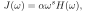 | (12) |
Boson_J_type
to ohmic.
and can be set via Boson_J_alpha and Boson_J_s,
respectively. The finite energy range defined by Boson_omega_min and
Boson_omega_max already leads to a natural cutoff, but one can
also use, e.g., an exponential cutoff
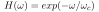
by setting Boson_J_cutoff to exp and Boson_J_omega_c
to 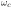.
Keep in mind that the generated spectral density can be printed by
providing a file name to the parameter Boson_J_print, which can be
useful for debugging.
The independent boson model, i.e, a TLS diagonally and linearly coupled to a continuum of harmonic oscillators, is also a good model for the coupling between electronic states in a quantum dot (QD) and longitudinal acoustic phonons. The corresponding Hamiltonian is
| 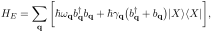 | (13) |
where 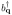 and 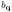 are creation and annihilation operators for phonons with wave vector 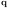.
Due to the ordered structure of solid state crystals,
electron-phonon interactions are well understood and can be derived from
microscopic considerations. It turns out that the dominant
deformation potential coupling to longitudinal acoustic phonons is
superohmic with exponent 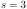.
For a typical GaAs-based semiconductor quantum dot,
a set of parameters that enter the spectral density has been worked out
by Krummheuer et al. in [Phys. Rev. B 71, 235329 (2005)].
To use them, simply set Boson_J_type to QDPhonon.
Try the following parameter file QDPhonon_ACE.param:
te 20
dt 1e-1
Nintermediate 20
threshold 5e-8
dict_zero 1e-12
add_Hamiltonian {-1.5*|1><1|_2}
add_Pulse Gauss 7 5 3 0 {|1><0|_2}
Boson_N_modes 100
Boson_M 3
Boson_E_max 5
Boson_J_type QDPhonon
Boson_subtract_polaron_shift true
temperature 4
outfile QDPhonon_ACE.out
Two parameters in this file have not been discussed so far,
dict_zero and Boson_subtract_polaron_shift.
The former enables a trick to increase efficiency based on
group decomposition as discussed in the supplementary material of the
ACE article on the example of superradiance, which is also related to
[Phys. Rev. B 96, 201201(R) (2017)] describing an analogous idea for
the iQUAPI method:
For certain types of couplings, MPO matrices
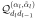 are identical
for different combinations of
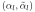.
In this case, only one representation has to be stored and calculated, which
reduces the numerical demands. In the above example with diagonal coupling
(Boson_SysOp has the default value of |1><1|_2), the
environment does not induce system transitions, so
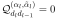 for
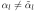. These don't have to be stored, reducing
the numerical demands by at least a factor of 4 (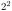 instead of 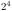
combinations of
). Which matrices are zero and
which are identical with matrices for other combinations of system indices
can be computed automatically from the microscopic Hamiltonian.
The parameter dict_zero tells the code what can be considered as
practically zero or practically identical for this purpose. If a positive
value is given, automatic detection of groups with identical couplings
is enabled.
Setting Boson_subtract_polaron_shift to true tells the code
to subtract polaron shift from the system energy levels:
For the independent boson model, it is well known that the
interaction with the bath renormalizes the energies of the system
by the polaron shift
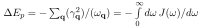.
As this shift is present irrespective of the state of the system or the
environment, experimental determination of the energy levels of the TLS
usually reveals the polaron shifted values. It is therefore convenient to
subtract the polaron shift, redefine the energy levels, and avoid dealing
with renormalization effects explicitly when comparing calculations with
and without phonons.